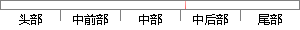

采样频率f_s通常远大于相关序列r(n,d)对应的信号带宽B，然而根据带通采样定理可知，为了保证信号不失真，要求采样频率大于2B，并不要求采样频率远大于带宽B。
片段位置图

相似结果|
1
原句片段：号不失真，要求采样频率大于2B，并不要求采样频率远大于带宽B。
相似片段 1：系统的带宽ωb、 谐振频率ωr和谐振峰值Mr,并与...当fs?2B时,采样信号的频谱会发生混迭,所以无法用...是信号采样后能不失真的还原,采样频率fs必须远大于...
相似片段 2：如果采样频率远高于仪器的信号带宽(仪器的响应频率),仪器的输入就会失真。影响...分析仪是用来分析其它信号的,采样定理要求采样频率大于被分析信号最高分析频率的至少...
|
※ 片段修改建议 ※
近似词参考：- 通常：凡是 每每 平常 平日
- 相关：相干
- 信号：旌旗灯号
- 然而：但是
- 根据：按照 凭据 依据
- 保证：包管
- 信号：旌旗灯号
- 要求：请求
- 并不：其实不
- 要求：请求
系统自动生成语句：采样频率f_s凡是远大于相干序列r(n,d)对应的旌旗灯号带宽B，但是按照带通采样定理可知，为了包管旌旗灯号不失真，请求采样频率大于2B，其实不请求采样频率远大于带宽B。
注：本片段修改建议为系统自动生成，仅供参考。